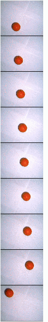
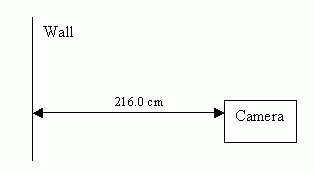
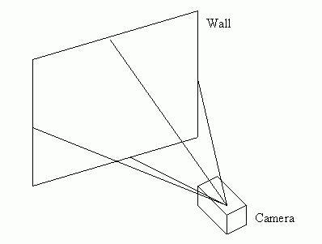
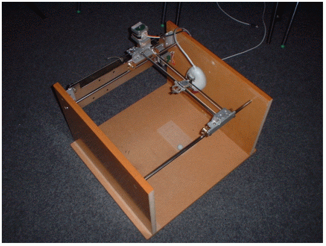
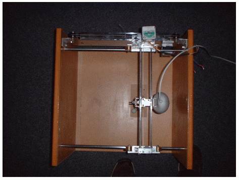
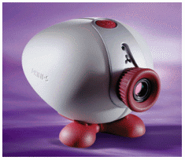
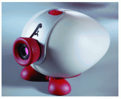
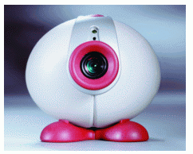

Contents
- Summary
- Introduction
- Design & Specification
- Implementation & Testing
- Project Management
- Conclusions
- Appendix
- Bibliography
©2000-2001 Adrian Banks
Last Updated : 18th May 2001
Last Updated : 18th May 2001
Test Image Data
|
 |
Sample image data - nine differently positioned balls
Test data was acquired using the "Philips VGA Digital Camera" by capturing pictures of a real tennis ball in motion on a white background. Each position of the ball satisfies the criteria set down on the motion of the ball (see "Assumptions & Design Restrictions" in the "Design & Specification" scetion), except the last. This was included as to provide a "stray" ball that did not follow along a path as with the other images of the ball. Each image is 350 by 285 pixels in physical size (45.6Kbytes memory) and can be fully processed by the edge detection algorithm in less than half a second. |
Camera Resolution
The camera was positioned at a perpendicular distance of 216cm (85") from a flat wall and the physical view dimensions were measured.

|
Camera Resolution
(x x y pixels) |
Distance d
(cm) |
Physical View Width
(cm) |
Physical View Height
(cm) |
Image Size
(bytes) |
| 128 x 96 | 216.0 | 106.7 | 76.2 | 18432 |
| 160 x 120 | 216.0 | 165.1 | 114.3 | 28800 |
| 176 x 178 | 216.0 | 147.3 | 116.8 | 38016 |
| 260 x 144 | 216.0 | 121.9 | 86.4 | 63360 |
| 320 x 240 | 216.0 | 165.1 | 116.8 | 115200 |
| 352 x 288 | 216.0 | 149.9 | 119.4 | 152064 |
| 640 x 480 | 216.0 | 165.1 | 119.4 | 460800 |
These measurements were then used to calculate the corresponding angles of projection of the different camera resolutions.

|
Camera Resolution
(x x y pixels) |
Horizontal Angle
(°) |
Vertical Angle
(°) |
| 128 x 96 | 13.9 | 6.7 |
| 160 x 120 | 20.9 | 10.0 |
| 176 x 178 | 18.8 | 10.2 |
| 260 x 144 | 15.8 | 7.6 |
| 320 x 240 | 20.9 | 10.2 |
| 352 x 288 | 19.1 | 10.4 |
| 640 x 480 | 20.9 | 10.4 |
An estimate of 66.0cm was placed on the distance at which the camera would be placed on the final constructed camera rig for the third year part of the project. Using this as correct, calculations were done using basic trigonometry to work out the visible area for each camera resolution.
|
Camera Resolution
(x x y pixels) |
Height
(cm) |
View Width
(cm) |
View Height
(cm) |
View Area
(cm2) |
| 128 x 96 | 66.0 | 35.5 | 23.4 | 830.7 |
| 160 x 120 | 66.0 | 50.5 | 35.1 | 1772.6 |
| 176 x 178 | 66.0 | 45.0 | 35.6 | 1602.0 |
| 260 x 144 | 66.0 | 37.3 | 26.4 | 984.7 |
| 320 x 240 | 66.0 | 50.5 | 35.6 | 1797.8 |
| 352 x 288 | 66.0 | 45.7 | 36.3 | 1658.9 |
| 640 x 480 | 66.0 | 50.5 | 36.3 | 1832.2 |
Finally, a resolution of 160x120 was chosen to accommodate both the physical view are of the camera and the size of the image in memory at this resolution. At the height of 66.0cm, this covers approximately one fifth of the total proposed area that the camera will need to cover. This is adequate because the camera will be moving around on the motors on which it is mounted.
Camera Mounting Rig
The third year part of the project included the design and construction of a rig suitable for the mounting of the Philips VGA Digital Camera. Pictures of this rig can be seen below.


This camera rig can be controlled via the serial port of a desktop PC. The camera position can be altered by movement of the stepper motors mounted on the rig.
Philips Vesta Pro WebCam
The camera chosen for the image capture parts of the project is the Philips VGA Vesta Pro Digital Camera.
This camera is capable of capturing both colour and black and white images at various resolutions.



Philips Vesta Pro WebCam